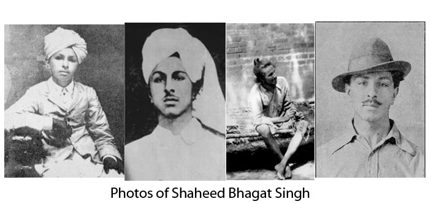
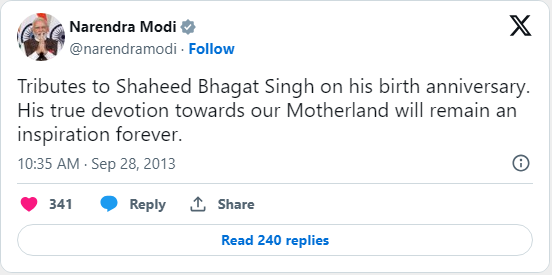

Shaheed Bhagat Singh
An Indian revolutionary socialist
who was influential in the Indian independence movement.

Here's a time line of Shaheed Bhagat Singh's life:
- 1907- Born in village Banga, Pakistan.
- 1923- Joined the National College in Lahore.
- 1924 - Became a member of the Hindustan Republican Association.
- 1928- British set up the Simon Commission to report on the political situation in India. Lala Lajpat Rai, a prominent leader of HRA, Rai died of a heart attack. Enraged by his incident, Singh vowed to avenge Rai's death and teamed up with other revolutionaries, Shivaram Rajguru, Sukhdev Thapar and Chandrashekhar Azad to make a plan to kill Scott.
- 1929- Singh, accompanied by Batukeshwar Dutt, threw two bombs into the Assembly chamber from its public gallery. Their intention was not to kill anyone but to gain publicity. After the explosion, the young men began shouting the slogan "Inquilab Zindabad!" ("Long Live the Revolution") and threw leaflets. Then they offered themselves for arrest.
- 1931 - Singh's growing popularity bothered the British authorities greatly and the government decided to advance the start of the Saunders murder trial, which was henceforth called the Lahore Conspiracy Case. Hanged in the Lahore jail. Bhagat Singh was just 23 years old. The bodies were then secretly cremated outside Ganda Singh Wala village.

If you have time, you should read more about this brave revolutionary socialist on his Wikipedia entry.